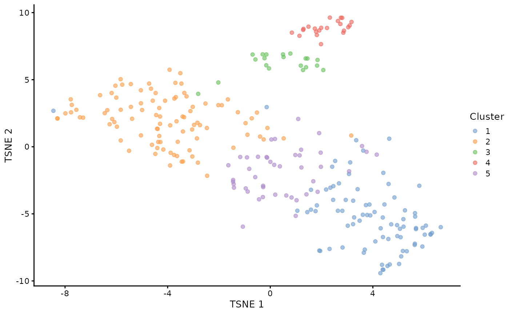

Using scp for single-cell proteomics analyses
Laurent Gatto and Christophe Vanderaa
Source:vignettes/v02-scp.Rmd
v02-scp.RmdLast modified: 2021-05-28 17:56:32
Compiled: Fri May 28 20:33:50 2021
Introduction
Mass spectrometry (MS)-based single-cell proteomics (SCP) is emerging thanks to several recent technological advances in sample preparation, liquid chromatography (LC) and MS (see Kelly (2020) for a comprehensive review). The improvements tackle the issues encountered when dealing with small sample amounts and focus on:
- Reducing sample loss
- Increasing sensitivity and quantification accuracy
- Increasing acquisition throughput
Two main strategies have currently been developed. On the one hand, label-free protocols acquire one single cell per MS run leading to accurate quantification but low sensitivity and throughput. On the other hand, label-based protocols multiplex several single-cell samples in one MS run leading to higher throughput (1000 cells per week). Another advantage of label-based protocols is the inclusion of a carrier sample, that is a sample containing between tens to hundreds of cells. Including a carrier increases sensitivity thanks to increased sample material, but at the cost of decreased quantification accuracy due to chemical noise (linked to sample labelling) and competition between the single-cell samples and the carrier sample during MS acquisition.
The scp data framework
SCP data is very similar to bulk proteomics data with the exception that the PSM data may be composed of tens to hundreds of separate acquisition runs. The QFeatures class is able to store this acquisition structure by considering each MS run as a separate assay. The assays can be subjected to downstream analysis for single-cell data such as dimensions reduction, clustering, differential abundance analysis,… Therefore, the assays are stored as SingleCellExperiment objects (Lun and Risso (2020)) to create a direct interface to existing Bioconductor packages to perform such downstream analyses. The links between related features across different assays are also stored to facilitate manipulation and visualization of of PSM, peptide and protein data as we go along with the processing workflow.

Conceptual overview of a QFeatures object containing SCP data. Each assay is stored as a SingleCellExperiment object.
SCP data
There are two input tables required for starting an analysis with scp:
- The feature data
- The sample data
Feature data
The feature data are generated after the identification and quantification of the MS spectra by a pre-processing software such as MaxQuant, ProteomeDiscoverer or MSFragger (the list of available software is actually much longer). We will here use as an example a data table that has been generated by MaxQuant. The table is available from the scp package and is called mqScpData (for MaxQuant generated SCP data).
In this toy example, there are 1361 rows corresponding to features (quantified PSMs) and 149 columns corresponding to different data fields recorded by MaxQuant during the processing of the MS spectra. The columns can be divided into three categories:
- Columns holding feature quantifications
- Columns holding feature metadata
- Columns holding MS run metadata
Feature quantifications
The quantification data can be composed of one (in case of label-free acquisition) up to 16 columns (in case of TMT-16 multiplexing). The columns holding the quantification start with Reporter.intensity. followed by a number.
(quantCols <- grep("Reporter.intensity.\\d", colnames(mqScpData),
value = TRUE))
## [1] "Reporter.intensity.1" "Reporter.intensity.2" "Reporter.intensity.3"
## [4] "Reporter.intensity.4" "Reporter.intensity.5" "Reporter.intensity.6"
## [7] "Reporter.intensity.7" "Reporter.intensity.8" "Reporter.intensity.9"
## [10] "Reporter.intensity.10" "Reporter.intensity.11" "Reporter.intensity.12"
## [13] "Reporter.intensity.13" "Reporter.intensity.14" "Reporter.intensity.15"
## [16] "Reporter.intensity.16"As you may notice, the example data was acquired using a TMT-16 protocol since we retrieve 16 quantification columns. Actually, some runs were acquired using a TMT-11 protocol (11 labels) but we will come back to this later.
head(mqScpData[, quantCols])
## Reporter.intensity.1 Reporter.intensity.2 Reporter.intensity.3
## 1 61251 501.71 3731.3
## 2 58648 1099.80 2837.7
## 3 150350 3705.00 9361.0
## 4 27347 405.90 1525.2
## 5 84035 583.09 4092.3
## 6 44895 700.23 2283.0
## Reporter.intensity.4 Reporter.intensity.5 Reporter.intensity.6
## 1 1643.30 871.84 981.87
## 2 494.32 349.26 1030.50
## 3 0.00 1945.40 1188.60
## 4 0.00 0.00 318.74
## 5 530.13 718.13 2204.50
## 6 1109.60 0.00 675.79
## Reporter.intensity.7 Reporter.intensity.8 Reporter.intensity.9
## 1 1200.10 939.06 1457.50
## 2 0.00 1214.10 800.58
## 3 1574.00 2302.10 2176.10
## 4 0.00 519.81 0.00
## 5 960.51 453.77 1188.40
## 6 0.00 809.38 668.88
## Reporter.intensity.10 Reporter.intensity.11 Reporter.intensity.12
## 1 1329.80 981.83 NA
## 2 807.79 391.38 NA
## 3 1399.50 1307.50 2192.4
## 4 507.23 370.79 NA
## 5 740.99 0.00 NA
## 6 1467.50 901.38 NA
## Reporter.intensity.13 Reporter.intensity.14 Reporter.intensity.15
## 1 NA NA NA
## 2 NA NA NA
## 3 1791.4 1727.5 2157.3
## 4 NA NA NA
## 5 NA NA NA
## 6 NA NA NA
## Reporter.intensity.16
## 1 NA
## 2 NA
## 3 1398
## 4 NA
## 5 NA
## 6 NAFeature metadata
Most columns in the mqScpData table contain information used or generated during the identification of the MS spectra. For instance, you may find the charge of the parent ion, the score and probability of a correct match between the MS spectrum and a peptide sequence, the sequence of the best matching peptide, its length, its modifications, the retention time of the peptide on the LC, the protein(s) the peptide originates from and much more.
head(mqScpData[, c("Charge", "Score", "PEP", "Sequence", "Length",
"Retention.time", "Proteins")])
## Charge Score PEP Sequence Length Retention.time
## 1 2 41.029 5.2636e-04 ATNFLAHEK 9 65.781
## 2 2 44.349 5.8789e-04 ATNFLAHEK 9 63.787
## 3 2 51.066 4.0315e-24 SHTILLVQPTK 11 71.884
## 4 2 63.816 4.7622e-06 SHTILLVQPTK 11 68.633
## 5 2 74.464 6.8709e-09 SHTILLVQPTK 11 71.946
## 6 2 41.502 5.3705e-02 SLVIPEK 7 76.204
## Proteins
## 1 sp|P29692|EF1D_HUMAN
## 2 sp|P29692|EF1D_HUMAN
## 3 sp|P84090|ERH_HUMAN
## 4 sp|P84090|ERH_HUMAN
## 5 sp|P84090|ERH_HUMAN
## 6 sp|P62269|RS18_HUMANMS run metadata
This type of metadata is related to the MS instrument. In MaxQuant, only the file name generated by MS instrument is stored. There is one file for each MS run, hence the file name can be used as a batch identifier.
unique(mqScpData$Raw.file)
## [1] "190321S_LCA10_X_FP97AG" "190222S_LCA9_X_FP94BM"
## [3] "190914S_LCB3_X_16plex_Set_21" "190321S_LCA10_X_FP97_blank_01"The 1361 PSM were found across 4 MS runs.
Sample data
Next to the quantification data and the feature data, sample metadata contains the experimental design generated by the researcher. The rows of sample metadata correspond to a sample in the experiment and the columns correspond to the available information about the sample. We will here use the second example table provided in scp:
data("sampleAnnotation")
head(sampleAnnotation)
## Raw.file Channel SampleType lcbatch sortday digest
## 1 190222S_LCA9_X_FP94BM Reporter.intensity.1 Carrier LCA9 s8 N
## 2 190222S_LCA9_X_FP94BM Reporter.intensity.2 Reference LCA9 s8 N
## 3 190222S_LCA9_X_FP94BM Reporter.intensity.3 Unused LCA9 s8 N
## 4 190222S_LCA9_X_FP94BM Reporter.intensity.4 Monocyte LCA9 s8 N
## 5 190222S_LCA9_X_FP94BM Reporter.intensity.5 Blank LCA9 s8 N
## 6 190222S_LCA9_X_FP94BM Reporter.intensity.6 Monocyte LCA9 s8 NThis table may contain any information about the samples. For example, useful information could be the type of sample that is analysed, an apriori known phenotype, the MS batch, the acquisition date, MS settings used to acquire the sample, the LC batch, the sample preparation batch, … scp requires 2 specific fields in the sample metadata:
- One column containing the MS run names (
Raw.filein this case). It must have the same name as the name of the column containing the MS run names in the quantification table. This will allowscpto correctly match and split data that were acquired separately. This is illustrated below by the linked circles. - One column that tells
scpwhich column in the feature data holds the quantification of the corresponding sample. This is illustrated below by the arrow.

Linking the sample data to the feature data
As a note, the example sample data contains 5 different types of samples (SampleType):
- The carrier channels (
Carrier) contain 200 cell equivalents and are meant to boost the peptide identification rate. - The normalization channels (
Reference) contain 5 cell equivalents and are used to partially correct for between-run variation. - The unused channels (
Unused) are channels that are left empty due to isotopic cross-contamination by the carrier channel. - The blank channels (
Blank) contain samples that do not contain any cell but are processed as single-cell samples. - The single-cell sample channels contain the single-cell samples of interest, that are macrophage (
Macrophage) or monocyte (Monocyte).
readSCP
readSCP is the function that converts the sample and the feature data into a QFeatures object following the data structure described above, that is storing the data belonging to each MS batch in a separate SingleCellExperiment object. We therefore provide the feature data, the sample data to the function as well as the name of the column that holds the batch name in both tables and the name of the column in the sample data that points to the quantification columns in the feature data. We also add an (optional) suffix to the sample names to remind that samples were labelled using 16 different TMT. Finally, another optional argument is to remove empty samples (removeEmptyCols = TRUE). We do this because one run was acquired using TMT-16 and the three other runs were acquired using TMT-11, meaning that the quantification columns for labels 12 to 16 are empty for all except one batch.
scp <- readSCP(featureData = mqScpData,
colData = sampleAnnotation,
batchCol = "Raw.file",
channelCol = "Channel",
suffix = paste0("_TMT", 1:16),
removeEmptyCols = TRUE)As prompted by the function, the feature data is converted to a SingleCellExperiment object then split according to the batch structure. This means that we should have as many assays than batches:
scp
## An instance of class QFeatures containing 4 assays:
## [1] 190222S_LCA9_X_FP94BM: SingleCellExperiment with 395 rows and 11 columns
## [2] 190321S_LCA10_X_FP97_blank_01: SingleCellExperiment with 109 rows and 11 columns
## [3] 190321S_LCA10_X_FP97AG: SingleCellExperiment with 487 rows and 11 columns
## [4] 190914S_LCB3_X_16plex_Set_21: SingleCellExperiment with 370 rows and 16 columnsIndeed, we can see that the object returned by readSCP is a QFeatures object containing 4 SingleCellExperiment assays that have been named after the 4 MS batches. Each assay contains either 11 or 16 columns (samples) depending on the TMT labelling strategy and a variable number of rows (quantified PSMs). Each piece of information can easily be retrieved thanks to the Qfeatures architectures. As mentioned in the previous vignette, sample data is retrieved from the colData. Note that unique sample names were automatically generated by combining the batch name and the suffix provided to readSCP:
head(colData(scp))
## DataFrame with 6 rows and 6 columns
## Raw.file Channel SampleType lcbatch
## <character> <character> <character> <character>
## 190222S_LCA9_X_FP94BM_TMT1 190222S_LC... Reporter.i... Carrier LCA9
## 190222S_LCA9_X_FP94BM_TMT2 190222S_LC... Reporter.i... Reference LCA9
## 190222S_LCA9_X_FP94BM_TMT3 190222S_LC... Reporter.i... Unused LCA9
## 190222S_LCA9_X_FP94BM_TMT4 190222S_LC... Reporter.i... Monocyte LCA9
## 190222S_LCA9_X_FP94BM_TMT5 190222S_LC... Reporter.i... Blank LCA9
## 190222S_LCA9_X_FP94BM_TMT6 190222S_LC... Reporter.i... Monocyte LCA9
## sortday digest
## <character> <character>
## 190222S_LCA9_X_FP94BM_TMT1 s8 N
## 190222S_LCA9_X_FP94BM_TMT2 s8 N
## 190222S_LCA9_X_FP94BM_TMT3 s8 N
## 190222S_LCA9_X_FP94BM_TMT4 s8 N
## 190222S_LCA9_X_FP94BM_TMT5 s8 N
## 190222S_LCA9_X_FP94BM_TMT6 s8 NThe feature metadata is retrieved from the rowData. Since the feature metadata is specific to each assay, we need to tell from which assay we want to get the rowData:
head(rowData(scp[["190222S_LCA9_X_FP94BM"]]))[, 1:5]
## DataFrame with 6 rows and 5 columns
## uid Sequence Length Modifications Modified.sequence
## <character> <character> <integer> <character> <character>
## PSM2 _(Acetyl (... ATNFLAHEK 9 Acetyl (Pr... _(Acetyl (...
## PSM4 _(Acetyl (... SHTILLVQPT... 11 Acetyl (Pr... _(Acetyl (...
## PSM6 _(Acetyl (... SLVIPEK 7 Acetyl (Pr... _(Acetyl (...
## PSM9 _AAGLALK_ ... AAGLALK 7 Unmodified _AAGLALK_
## PSM12 _AALSAGK_ ... AALSAGK 7 Unmodified _AALSAGK_
## PSM15 _AAPEASGTP... AAPEASGTPS... 16 Unmodified _AAPEASGTP...Finally, we can also retrieve the quantification matrix for an assay of interest:
head(assay(scp, "190222S_LCA9_X_FP94BM"))
## 190222S_LCA9_X_FP94BM_TMT1 190222S_LCA9_X_FP94BM_TMT2
## PSM2 58648.0 1099.80
## PSM4 27347.0 405.90
## PSM6 44895.0 700.23
## PSM9 122070.0 1153.50
## PSM12 58605.0 895.25
## PSM15 5006.5 517.86
## 190222S_LCA9_X_FP94BM_TMT3 190222S_LCA9_X_FP94BM_TMT4
## PSM2 2837.70 494.32
## PSM4 1525.20 0.00
## PSM6 2283.00 1109.60
## PSM9 7361.90 1732.30
## PSM12 2763.80 867.82
## PSM15 446.19 458.17
## 190222S_LCA9_X_FP94BM_TMT5 190222S_LCA9_X_FP94BM_TMT6
## PSM2 349.26 1030.50
## PSM4 0.00 318.74
## PSM6 0.00 675.79
## PSM9 1515.60 2252.00
## PSM12 1050.30 1268.70
## PSM15 467.90 649.50
## 190222S_LCA9_X_FP94BM_TMT7 190222S_LCA9_X_FP94BM_TMT8
## PSM2 0.00 1214.10
## PSM4 0.00 519.81
## PSM6 0.00 809.38
## PSM9 444.48 2343.80
## PSM12 532.30 1073.10
## PSM15 259.84 533.55
## 190222S_LCA9_X_FP94BM_TMT9 190222S_LCA9_X_FP94BM_TMT10
## PSM2 800.58 807.79
## PSM4 0.00 507.23
## PSM6 668.88 1467.50
## PSM9 3100.20 1825.20
## PSM12 911.30 1300.00
## PSM15 393.53 463.26
## 190222S_LCA9_X_FP94BM_TMT11
## PSM2 391.38
## PSM4 370.79
## PSM6 901.38
## PSM9 2372.50
## PSM12 1185.90
## PSM15 353.04
The scp package
The general workflow for processing SCP data is very similar to the workflow for bulk proteomics that we presented in the previous vignette. Therefore, the QFeatures package already contains most of the tools required for the processing of SCP data. The scp package implements the missing functions that are specifically designed for dealing with SCP data. We already used the readSCP function to format data from table to Qfeatures object. Here is a list of additional functions from scp that extend the QFeatures functions:
-
aggregateFeaturesOverAssays: extendsaggregateFeaturesto allow streamlined aggregation over multiple assays -
computeSCR: compute the sample over carrier ratio (SCR), a useful metric for feature QC -
divideByReference: divide columns by a reference column -
medianCVperCell: compute the median coefficient of variation (CV) per cell, a useful metric for single-cell QC -
normalizeSCP: extendsQFeatures::normalizetoSingleCellExperimentobjects -
pep2qvalue: compute q-values from posterior error probabilities -
rowDataToDF: extract therowDataof aQFeaturesobject to aDataFrame
You will be able to test those functions in the exercise later in this vignette.
The scpdata package
Next to scp, we also developed scpdata, a data package that disseminates published SCP data sets formatted using the scp data structure. The package heavily relies on the ExperimentHub infrastructure. This package is an ideal platform for data sharing and promotes for open and reproducible science in SCP, it facilitates the access for developers to SCP data to build and benchmark new methodologies and it facilitates the access for new users to data in the context of training and demonstration (like this workshop).
After loading the package, you can have a look at the available datasets by running:
library(scpdata)
scpdata()
## DataFrame with 12 rows and 15 columns
## title dataprovider species taxonomyid genome
## <character> <character> <character> <integer> <character>
## EH3899 specht2019... SlavovLab ... Homo sapie... 9606 NA
## EH3900 specht2019... SlavovLab ... Homo sapie... 9606 NA
## EH3901 dou2019_ly... MassIVE Homo sapie... 9606 NA
## EH3902 dou2019_mo... MassIVE Mus muscul... 10090 NA
## EH3903 dou2019_bo... MassIVE Mus muscul... 10090 NA
## ... ... ... ... ... ...
## EH3906 zhu2018NC_... PRIDE Homo sapie... 9606 NA
## EH3907 zhu2018NC_... PRIDE Homo sapie... 9606 NA
## EH3908 cong2020AC PRIDE Homo sapie... 9606 NA
## EH3909 zhu2019EL PRIDE Gallus gal... 9031 NA
## EH6011 liang2020_... PRIDE Homo sapie... 9606 NA
## description coordinate_1_based maintainer rdatadateadded
## <character> <integer> <character> <character>
## EH3899 SCP expres... 1 Christophe... 2020-11-05
## EH3900 SCP expres... 1 Christophe... 2020-11-05
## EH3901 SCP expres... 1 Christophe... 2020-11-05
## EH3902 SCP expres... 1 Christophe... 2020-11-05
## EH3903 SCP expres... 1 Christophe... 2020-11-05
## ... ... ... ... ...
## EH3906 Near SCP e... 1 Christophe... 2020-11-05
## EH3907 Near SCP e... 1 Christophe... 2020-11-05
## EH3908 SCP expres... 1 Christophe... 2020-11-05
## EH3909 SCP expres... 1 Christophe... 2020-11-05
## EH6011 Expression... 1 Christophe... 2021-04-27
## preparerclass tags rdataclass
## <character> <list> <character>
## EH3899 scpdata Experiment...,Expression...,Experiment...,... QFeatures
## EH3900 scpdata Experiment...,Expression...,Experiment...,... QFeatures
## EH3901 scpdata Experiment...,Expression...,Experiment...,... QFeatures
## EH3902 scpdata Experiment...,Expression...,Experiment...,... QFeatures
## EH3903 scpdata Experiment...,Expression...,Experiment...,... QFeatures
## ... ... ... ...
## EH3906 scpdata Experiment...,Expression...,Experiment...,... QFeatures
## EH3907 scpdata Experiment...,Expression...,Experiment...,... QFeatures
## EH3908 scpdata Experiment...,Expression...,Experiment...,... QFeatures
## EH3909 scpdata Experiment...,Expression...,Experiment...,... QFeatures
## EH6011 scpdata Expression...,MassSpectr...,Proteome,... QFeatures
## rdatapath sourceurl sourcetype
## <character> <character> <character>
## EH3899 scpdata/sp... https://sc... CSV
## EH3900 scpdata/sp... https://sc... CSV
## EH3901 scpdata/do... ftp://mass... XLS/XLSX
## EH3902 scpdata/do... ftp://mass... XLS/XLSX
## EH3903 scpdata/do... ftp://mass... XLS/XLSX
## ... ... ... ...
## EH3906 scpdata/zh... ftp://ftp.... TXT
## EH3907 scpdata/zh... ftp://ftp.... TXT
## EH3908 scpdata/co... ftp://ftp.... TXT
## EH3909 scpdata/zh... ftp://ftp.... TXT
## EH6011 scpdata/li... ftp://ftp.... TXTFor instance, loading the data sets published in Zhu et al. (2019) is as simple as calling the title of the data set:
zhu2019EL()
## An instance of class QFeatures containing 62 assays:
## [1] 1H1a: SingleCellExperiment with 152 rows and 1 columns
## [2] 1H1b: SingleCellExperiment with 267 rows and 1 columns
## [3] 1H1c: SingleCellExperiment with 128 rows and 1 columns
## ...
## [60] 2N0c: SingleCellExperiment with 61 rows and 1 columns
## [61] peptides: SingleCellExperiment with 3444 rows and 60 columns
## [62] proteins: SingleCellExperiment with 840 rows and 60 columnsReproduce a published analysis
As a use-case, we will reproduce the analysis of the SCoPE2 data published in Specht et al. (2021). SCoPE2 is the first published SCP protocol that has been used to profile thousands of proteins in thousands of single-cells. This is a technical milestone for the field and it opens the door for a fine-grain understanding of biological processes at the protein level.
Along their acquisition protocol, the authors have also provided an R script to reproduce their data processing. The code is hard to read and built from scratch. We have used scp to standardize this workflow (Vanderaa and Gatto (2021)) and reproduce the results using code that can easily be adapted to other data sets. The outline of the workflow is shown below.

Workflow describing the main steps performed by Specht et al. to process the SCP data.
Import the data
In a previous section we have shown how to format the feature and sample tables to a Qfeatures object for a small subset of the SCoPE2 data set. The scpdata package provides the Qfeautres object containing the full data set.
(scp <- specht2019v3())
## An instance of class QFeatures containing 179 assays:
## [1] 190222S_LCA9_X_FP94AA: SingleCellExperiment with 2777 rows and 11 columns
## [2] 190222S_LCA9_X_FP94AB: SingleCellExperiment with 4348 rows and 11 columns
## [3] 190222S_LCA9_X_FP94AC: SingleCellExperiment with 4917 rows and 11 columns
## ...
## [177] 191110S_LCB7_X_APNOV16plex2_Set_9: SingleCellExperiment with 4934 rows and 16 columns
## [178] peptides: SingleCellExperiment with 9354 rows and 1490 columns
## [179] proteins: SingleCellExperiment with 3042 rows and 1490 columnsThe data set provides 177 assays containing the PSM data, but also two assays that contain the peptide and protein data generated by the authors in the original work.
First, to reduce the computational burden we will focus on part of the data. The samples that were acquired in 4 chromatographic batches and we will run this example on the batch called (LCB3). We subset the Qfeatures using the triple-index brackets [feature, sample, assay] and using the LC batch annotation available from the colData. Note also that we use drop = TRUE to drop assays that do not contains samples acquired in LCB7 batch.
PSM quality control
Filter out failed runs based on PSM content
First, only the assays that have sufficient PSMs are kept. The authors keep an assay if it has over 500 PSMs. Before filtering, let’s first look at the distribution of the number of PSMs per assay. Note that we can easily extract the number of rows (here PSMs) and the number of columns (TMT channels) of each assay using the dims function implemented in QFeatures.
nPSMs <- dims(scp)[1, ]Let’s have a look at the number of features that were identified in the different runs.
ggplot(data.frame(nPSMs)) +
aes(x = nPSMs) +
geom_histogram() +
geom_vline(xintercept = 500)
No MS run failed in the LB3 batch. If some runs had failed, we could have subsetted the data taking advantage of the subsetting method of a QFeatures object.
scp <- scp[, , nPSMs > 500]Filter out PSMs with high false discovery rate
Next, the SCoPE2 workflow filters PSMs based on the false discovery rate (FDR) for identification. The PSM data were already processed with DART-ID ((Chen2019-uc?)), a python software that updates the confidence in peptide identification using an Bayesian inference approach. DART-ID outputs for every PSM the updated posterior error probability (PEP). Filtering on the PEP is too conservative and it is rather advised to filter based on FDR ((Kall2008-hb?)). To control for the FDR, we need to compute q-values, that correspond to the minimal FDR threshold that would still select the associated feature.
We can use the pep2qvalue function to easily compute q-values from the PEPs computed by MaxQuant or updated by DART-ID. In the SCoPE2 workflow, the features are selected based on the FDR at PSM level and at protein level. The DART-ID PEPs (dart_PEP) as well as the protein information (protein) are automatically retrieved from the rowData of each assay. The function will store the computed q-values back in the rowData. It will be stored under qvalue_psm and qvalue_protein for the PSM and proteins q-values, respectively.
scp <- pep2qvalue(scp,
i = names(scp),
PEP = "dart_PEP",
rowDataName = "qvalue_psm")
scp <- pep2qvalue(scp,
i = names(scp),
groupBy = "protein",
PEP = "dart_PEP",
rowDataName = "qvalue_protein")We can extract the q-values from the rowData of several assays using the rowDataToDF function. It takes the rowData of interest and returns a single DataFrame table with variables of interest. We plot the q-values along with the DART-ID PEPs using ggplot2 facets.
rowDataToDF(scp,
i = names(scp),
vars = c("dart_PEP", "qvalue_psm", "qvalue_protein")) %>%
data.frame %>%
pivot_longer(cols = c("dart_PEP", "qvalue_psm", "qvalue_protein"),
names_to = "measure") %>%
ggplot(aes(x = value)) +
geom_histogram() +
geom_vline(xintercept = 0.1) +
scale_x_log10() +
facet_grid(rows = vars(measure))
We filter the PSMs to control for a 1% PSM and protein FDR. We can perform this on our QFeatures object by using the filterFeatures function. The q-values are directly accessed from the rowData of each assay.
scp <- filterFeatures(scp,
~ qvalue_psm < 0.01 & qvalue_protein < 0.01)Filter out contaminants
We will now remove PSMs that were matched to contaminant proteins (the protein name starts with CON) or to the decoy database (the protein name starts with REV). Again, filterFeatures can directly access the protein names from the rowData.
scp <- filterFeatures(scp,
~ !grepl("REV|CON", protein))Filter out noisy spectra
A PIF (parental ion fraction) smaller than 80 % indicates the associated spectra is contaminated by co-isolated peptides and therefore the quantification becomes unreliable. The PIF was computed by MaxQuant and is readily available for filtering.
scp <- filterFeatures(scp,
~ !is.na(PIF) & PIF > 0.8)Filter out PSMs with high sample to carrier ratio
The PSMs are next filtered based on the sample to carrier ratio (SCR), that is the TMT ion intensity of a single-cell sample divided by the TMT ion intensity of the carrier (200 cells) acquired during the same run as the sample. It is expected that the carrier intensities are much higher than the single-cell intensities. We implemented the computeSCR function that computes the SCR for each PSM averaged over all samples of interest in a given assay. A PSM is removed when the mean SCR exceeds 10 %. To perform this, we need to tell the function which columns are the samples of interest and which column is the carrier. The colData of the QFeatures object is used to define this.
table(scp$SampleType)
##
## Blank Carrier Macrophage Monocyte Reference Unused
## 22 24 192 74 24 48In this dataset, SampleType gives the type of sample that is present in each TMT channel. The SCoPE2 protocol includes 5 types of samples:
- The carrier channels (
Carrier) contain 200 cell equivalents and are meant to boost the peptide identification rate. - The normalization channels (
Reference) contain 5 cell equivalents and are used to partially correct for between-run variation. - The unused channels (
Unused) are channels that are left empty due to isotopic cross-contamination by the carrier channel. - The blank channels (
Blank) contain samples that do not contain any cell but are processed as single-cell samples. - The single-cell sample channels contain the single-cell samples of interest (
MacrophageorMonocyte).
The computeSCR function expects the user to provide a pattern (following regular expression syntax) that uniquely identifies a carrier channel in each run and the samples or blanks. The function will store the mean SCR of each feature in the rowData of each assay.
scp <- computeSCR(scp,
i = names(scp),
colDataCol = "SampleType",
carrierPattern = "Carrier",
samplePattern = 4:16)
## Warning in computeSCR(scp, i = names(scp), colDataCol = "SampleType",
## carrierPattern = "Carrier", : The pattern is numeric. This is only allowed for
## replicating the SCoPE2 analysis and will later get defunct.In this step, we supplied numeric entries as samplePattern instead of a regular expression pattern. This is to replicate the SCoPE2 analysis. We refrain from using a numeric pattern (as indicated by the warning above) because this can lead to unnoticed artefacts. In fact, the empty channels of the TMT-16 runs but not TMT-11 channels are here also used to compute the average SCR which could have been avoided when using a character pattern.
Before applying the filter, we plot the distribution of the mean SCR.
rowDataToDF(scp,
i = names(scp),
vars = "MeanSCR") %>%
data.frame %>%
ggplot(aes(x = MeanSCR)) +
geom_histogram() +
geom_vline(xintercept = c(1/200, 0.1),
lty = 2:1) +
scale_x_log10()
A great majority of the PSMs have a mean SCR that is lower than 10%, as expected. Interestingly, the mode of the distribution is located close to 1%. This is expected since every sample channel contains a single-cell and the carrier contains 200 cells leading to an expected ratio of 0.5% (dashed line). We remove the PSMs for which the mean SCR exceeds the 10% threshold.
scp <- filterFeatures(scp,
~ !is.na(MeanSCR) &
!is.infinite(MeanSCR) &
MeanSCR < 0.1)Normalization to reference
In order to partially correct for between-run variation, SCoPE2 computes relative reporter ion intensities. This means that intensities measured for single-cells are divided by the reference channel (5-cell equivalents). We use the divideByReference function that divides channels of interest by the reference channel. Similarly to computeSCR, we can point to the samples and the reference columns in each assay using the annotation contained in the colData. We will here divide all columns (using the regular expression wildcard .) by the reference channel (Reference). Notice that when taking all samples we also include the reference channel itself. Hence, from now on, the reference channels will contain only ones.
scp <- divideByReference(scp,
i = names(scp),
colDataCol = "SampleType",
samplePattern = ".",
refPattern = "Reference")PSM to peptide aggregation
Now that the PSM assays are processed, we can aggregate them to peptides. This is performed using the aggregateFeaturesOverAssays function. This is a wrapper function in scp that sequentially calls the aggregateFeatures from the QFeatures package over the different assays. For each assay, the function aggregates several PSMs into a unique peptide given an aggregating variable in the rowData (peptide sequence) and a user-supplied aggregating function (the median for instance). Regarding the aggregating function, the SCoPE2 analysis removes duplicated peptide sequences per run by taking the first non-missing value. While better alternatives are documented in QFeatures::aggregateFeatures, we still use this approach for the sake of replication and for illustrating that custom functions can be applied.
The aggregated peptide assays must be given a name. We here used the original names with peptides_ at the start.
We now have all the required information to aggregate the PSMs in the different batches to peptides.
scp <- aggregateFeaturesOverAssays(scp,
i = names(scp),
fcol = "peptide",
name = peptideAssays,
fun = remove.duplicates)Under the hood, the QFeatures architecture preserves the relationship between the aggregated assays. See ?AssayLinks for more information on relationships between assays. Notice that aggregateFeaturesOverAssays created as many new assays as the number of supplied assays.
scp
## An instance of class QFeatures containing 48 assays:
## [1] 190913S_LCB3_X_16plex_Set_12: SingleCellExperiment with 1624 rows and 16 columns
## [2] 190913S_LCB3_X_16plex_Set_17_reinject2: SingleCellExperiment with 1484 rows and 16 columns
## [3] 190914S_LCB3_X_16plex_Set_1: SingleCellExperiment with 1415 rows and 16 columns
## ...
## [46] peptides_190914S_LCB3_X_16plex_Set_7: SingleCellExperiment with 1775 rows and 16 columns
## [47] peptides_190914S_LCB3_X_16plex_Set_8: SingleCellExperiment with 1350 rows and 16 columns
## [48] peptides_190914S_LCB3_X_16plex_Set_9: SingleCellExperiment with 1944 rows and 16 columnsJoin the SCoPE2 sets in one assay
Up to now, we kept the data belonging to each MS run in separate assays. We now combine all batches into a single assay. This can easily be done using the joinAssays function from the QFeatures package.
Consensus mapping of peptides to proteins
We need to account for an issue in the data. joinAssays will only keep the metadata variables that have the same value between matching rows. However, some peptide sequences map to one protein in one run and to another protein in another run. Hence, the protein sequence is not constant for all peptides and is removed during joining. It is important we keep the protein sequence in the rowData since we will later need it to aggregate peptides to proteins. To avoid this issue, we replace the problematic peptides to protein mappings through a majority vote.
scp %>%
rowDataToDF(i = names(scp)[1:24],
vars = c("peptide", "protein")) %>%
data.frame %>%
group_by(peptide) %>%
## The majority vote happens here
mutate(protein = names(sort(table(protein),
decreasing = TRUE))[1]) %>%
select(peptide, protein) %>%
filter(!duplicated(peptide, protein)) ->
ppMap
consensus <- lapply(peptideAssays, function(i) {
ppMap$protein[match(rowData(scp[[i]])$peptide, ppMap$peptide)]
})
names(consensus) <- peptideAssays
## TODO put this in QFeatures
scp <- replaceRowDataCols(scp, i = peptideAssays, "protein", consensus)This code chunk is hard to read, but this issue should represent a special case and we therefore don’t consider this step worth standardizing. Some peptides are mapped to different proteins because the TMT-11 and TMT-16 data sets were analysed separately in MaxQuant. Razor peptides, i.e. peptides that are found in several protein groups, are assigned to the protein group with most peptides ((Tyanova2016-yj?),) and this can vary from one analysis to another. Therefore, inconsistent peptide mapping should not occur when all runs are preprocessed at once. We will see later that this issue does not impair the replication of the SCoPE2 analysis, but it recalls that mapping of shared peptides to proteins is not a trivial task.
Cleaning missing data
Another important step before we join the assays is to replace zero and infinite values by NAs. The zeros can be biological zeros or technical zeros and differentiating between the two types is a difficult task, they are therefore better considered as missing. The infinite values arose during the normalization by the reference because the channel values are divide by a zero from the reference channel. This artefact could easily be avoided if we had replace the zeros by NAs at the beginning of the workflow, what we strongly recommend for future analyses.
The infIsNA and the zeroIsNA functions automatically detect infinite and zero values, respectively, and replace them with NAs. Those two functions are provided by the QFeatures package.
Join assays
Now that the peptides are correctly matched to proteins and missing values are correctly formatted, we can join the assays.
scp <- joinAssays(scp,
i = peptideAssays,
name = "peptides")joinAssays has created a new assay called peptides that combines the previously aggregated peptide assays.
scp
## An instance of class QFeatures containing 49 assays:
## [1] 190913S_LCB3_X_16plex_Set_12: SingleCellExperiment with 1624 rows and 16 columns
## [2] 190913S_LCB3_X_16plex_Set_17_reinject2: SingleCellExperiment with 1484 rows and 16 columns
## [3] 190914S_LCB3_X_16plex_Set_1: SingleCellExperiment with 1415 rows and 16 columns
## ...
## [47] peptides_190914S_LCB3_X_16plex_Set_8: SingleCellExperiment with 1350 rows and 16 columns
## [48] peptides_190914S_LCB3_X_16plex_Set_9: SingleCellExperiment with 1944 rows and 16 columns
## [49] peptides: SingleCellExperiment with 4368 rows and 384 columnsSingle-cell quality control
The SCoPE2 script proceeds with filtering the single-cells. The filtering is mainly based on the median coefficient of variation (CV) per cell. The median CV measures the consistency of quantification for a group of peptides that belong to a protein. We remove cells that exhibit high median CV over the different proteins. We compute the median CV per cell using the medianCVperCell function from the scp package. The function takes the protein information from the rowData of the assays that will tell how to group the features (peptides) when computing the CV. Note that we supply the peptide assays before joining in a single assays (i = peptideAssays). This is because SCoPE2 performs a custom normalization (norm = "SCoPE2"). Each row in an assay is normalized by a scaling factor. This scaling factor is the row mean after dividing the columns by the median. The authors retained CVs that are computed using at least 6 peptides (nobs = 6). See the methods section in Specht et al. (2021) for more information.
scp <- medianCVperCell(scp,
i = peptideAssays,
groupBy = "protein",
nobs = 6,
na.rm = TRUE,
colDataName = "MedianCV",
norm = "SCoPE2")The computed CVs are stored in the colData. We can now filter cells that have reliable quantifications. The blank samples are not expected to have reliable quantifications and hence can be used to estimate a null distribution of the CV. This distribution helps defining a threshold that filters out single-cells that contain noisy quantification.
colData(scp) %>%
data.frame %>%
filter(SampleType %in% c("Macrophage", "Monocyte", "Blank")) %>%
ggplot(aes(x = MedianCV,
fill = SampleType)) +
geom_histogram() +
geom_vline(xintercept = 0.365)
We can see that the protein quantification for single-cells are much more consistent within single-cell channels than within blank channels. A threshold of 0.365 best separates single-cells from empty channels.
We keep the cells that pass the median CV threshold. Furthermore, we keep macrophages and monocytes as those represent the samples of interest. We can extract the sample names that pass the CV and sample type filters using tidyverse manipulations.
colData(scp) %>%
data.frame %>%
rownames_to_column("cells") %>%
filter(MedianCV < 0.365,
SampleType %in% c("Macrophage", "Monocyte")) %>%
pull(cells) ->
keep
head(keep)
## [1] "190913S_LCB3_X_16plex_Set_12_RI5" "190913S_LCB3_X_16plex_Set_12_RI6"
## [3] "190913S_LCB3_X_16plex_Set_12_RI7" "190913S_LCB3_X_16plex_Set_12_RI8"
## [5] "190913S_LCB3_X_16plex_Set_12_RI9" "190913S_LCB3_X_16plex_Set_12_RI10"We have already demonstrated how to remove assays from the dataset, but we can apply a similar subsetting for the samples. Recall that the second entry in the [ method is for subsetting sample names.
scp <- scp[, keep, ]
scp
## An instance of class QFeatures containing 49 assays:
## [1] 190913S_LCB3_X_16plex_Set_12: SingleCellExperiment with 1624 rows and 12 columns
## [2] 190913S_LCB3_X_16plex_Set_17_reinject2: SingleCellExperiment with 1484 rows and 10 columns
## [3] 190914S_LCB3_X_16plex_Set_1: SingleCellExperiment with 1415 rows and 11 columns
## ...
## [47] peptides_190914S_LCB3_X_16plex_Set_8: SingleCellExperiment with 1350 rows and 11 columns
## [48] peptides_190914S_LCB3_X_16plex_Set_9: SingleCellExperiment with 1944 rows and 11 columns
## [49] peptides: SingleCellExperiment with 4368 rows and 265 columnsNormalization
The columns (samples) of the peptide data are first normalized by dividing the relative intensities by the median relative intensities. Then, the rows (peptides) are normalized by dividing the relative intensities by the mean relative intensities. The first normalization is available from the normalize function and accessible under the div.median method. The second is not available from normalize, but is easily performed using the sweep function from the QFeatures package that is inspired from the base::sweep function.
## Scale column with median
scp <- normalizeSCP(scp,
i = "peptides",
method = "div.median",
name = "peptides_norm1")
## Scale rows with mean
scp <- sweep(scp,
i = "peptides_norm1", MARGIN = 1,
FUN = "/",
STATS = rowMeans(assay(scp[["peptides_norm1"]]),
na.rm = TRUE),
name = "peptides_norm2")Each normalization step is stored in a separate assay. An important aspect to note here is that
Filter highly missing peptides
Peptides that contain many missing values are not informative. Therefore, we remove those with more than 99 % missing data. This is done using the filterNA function from QFeatures.
scp <- filterNA(scp,
i = "peptides_norm2",
pNA = 0.99)Log-transformation
The last processing step of the peptide data before aggregating to proteins is to log-transform the data. SCoPE2 uses a base 2 log-transformation and this is implemented in logTransform in QFeatures.
scp <- logTransform(scp,
base = 2,
i = "peptides_norm2",
name = "peptides_log")Peptide to protein aggregation
Similarly to aggregating PSM data to peptide data, we can aggregate peptide data to protein data using the aggregateFeatures function. Note that we here use the median as a summarizing function.
scp <- aggregateFeatures(scp,
i = "peptides_log",
name = "proteins",
fcol = "protein",
fun = matrixStats::colMedians, na.rm = TRUE)Normalization
Normalization is performed similarly to peptide normalization. We use the same functions, but since the data were log-transformed at the peptide level, we subtract/center by the statistic (median or mean) instead of dividing.
## Center columns with median
scp <- normalizeSCP(scp,
i = "proteins",
method = "center.median",
name = "proteins_norm1")
## Center rows with mean
scp <- sweep(scp,
i = "proteins_norm1",
MARGIN = 1,
FUN = "-",
STATS = rowMeans(assay(scp[["proteins_norm1"]]),
na.rm = TRUE),
name = "proteins_norm2")Imputation
The protein data contains a lot of missing values. The graph below shows the distribution of the proportion missingness in cells. Cells contain on average over 75 % missing values!
longFormat(scp[, , "proteins_norm2"]) %>%
data.frame %>%
group_by(colname) %>%
summarize(missingness = mean(is.na(value))) %>%
ggplot(aes(x = missingness)) +
geom_histogram()
## Warning: 'experiments' dropped; see 'metadata'
The missing data is imputed using K nearest neighbors. The SCoPE2 script runs KNN with k = 3. We made a wrapper around the author’s code to apply imputation to our QFeatures object.
scp <- imputeKnnSCoPE2(scp,
i = "proteins_norm2",
name = "proteins_impd",
k = 3)QFeatures provides the impute function that serves as an interface to different imputation algorithms among which the KNN algorithm from impute::impute.knn. However, the KNN implementation in SCoPE2 and in impute.knn are different. SCoPE2 performs KNN imputation in the sample space, meaning that data from neighbouring cells are used to impute the central cell, whereas impute::impute.knn performs KNN imputation in the feature space, meaning that data from neighbouring features are used to impute the missing values from the central features. We provide the code for KNN imputation with QFeatures but do not run in order to reproduce the SCoPE2 analysis.
scp <- impute(scp,
i = "proteins_norm2",
method = "knn",
k = 3, rowmax = 1, colmax= 1,
maxp = Inf, rng.seed = 1234)Batch correction
The final step is to model the remaining batch effects and correct for it. The data were acquired as a series of MS runs. Recall we had 177 assays at the beginning of the workflow. Each MS run can be subjected to technical perturbations that lead to differences in the data. This must be accounted for to avoid attributing biological effects to technical effects. The ComBat algorithm ((Johnson2007-nc?)) is used in the SCoPE2 script to correct for those batch effects. ComBat is part of the sva package. It requires a batch variable, in this case the LC-MS/MS run, and adjusts for batch effects, while protecting variables of interest, the sample type in this case. All the information is contained in the colData of the QFeatures object. We first extract the assays with the associated colData.
sce <- getWithColData(scp, "proteins_impd")
## Warning: 'experiments' dropped; see 'metadata'We next store the batch variable and create the design matrix. We then perform the batch correction and overwrite the data matrix. Recall the data matrix can be accessed using the assay function. Note also that we here use the ComBatv3.34 function that is provided in this package. This function was taken from an older version of the sva package (version 3.34.0). This is to replicate the SCoPE2 results. More recent versions will avoid batch correction for proteins that show no variance within at least one batch and this occurs for a significant proportion of the proteins (artefact of imputation).
batch <- colData(sce)$Set
model <- model.matrix(~ SampleType, data = colData(sce))
assay(sce) <- ComBatv3.34(dat = assay(sce),
batch = batch,
mod = model)Finally, we add the batch corrected assay to the QFeatures object and create the feature links.
scp %>%
addAssay(y = sce,
name = "proteins_batchC") %>%
addAssayLinkOneToOne(from = "proteins_impd",
to = "proteins_batchC") ->
scpNormalization
Before exporting the data as Proteins-processed.csv, the authors performed an additional normalization step.
## Center columns with median
scp <- normalizeSCP(scp,
i = "proteins_batchC",
method = "center.median",
name = "proteins_batchC_norm1")
## Center rows with mean
scp <- sweep(scp,
i = "proteins_batchC_norm1",
MARGIN = 1,
FUN = "-",
STATS = rowMeans(assay(scp[["proteins_batchC_norm1"]]),
na.rm = TRUE),
name = "proteins_scp")We named the last assay proteins_scp. We will contrast this data matrix to proteins_SCoPE2 later in the next section to assess the accuracy of the replication.
Downstream analyses
sce <- getWithColData(scp, "proteins_scp")
## Warning: 'experiments' dropped; see 'metadata'
## Warning: Ignoring redundant column names in 'colData(x)':Dimension reduction
Cluster analysis
library(scran)
library(scuttle)
library(bluster)
library(BiocNeighbors)
sce$Cluster <- clusterCells(sce,
assay.type = 1,
BLUSPARAM = SNNGraphParam(k = 10,
type = "rank",
BNPARAM = KmknnParam(),
cluster.fun = "walktrap",
cluster.args = list()))
plotTSNE(sce, colour_by = "Cluster") 
Maker gene identification
markers <- findMarkers(sce,
groups = sce$Cluster,
assay.type = 1,
pval.type = "all")
markers$`3` %>%
data.frame %>%
filter(FDR < 0.05) %>%
arrange(FDR)
## p.value FDR summary.logFC logFC.1 logFC.2
## Q9BXJ1 1.933543e-13 3.250286e-10 0.81254710 0.85498545 1.02896745
## Q494X3 2.148701e-08 1.805983e-05 -0.37508464 -0.37508464 -0.40040410
## Q99439 4.755157e-08 2.263554e-05 0.29085513 0.29085513 0.37580655
## Q9NPA2 6.553072e-08 2.263554e-05 0.46835660 0.56275329 0.67042695
## P18089 6.732759e-08 2.263554e-05 0.56234588 0.66290118 0.69492807
## Q5VZF2 5.401449e-07 1.513306e-04 0.39126726 0.43197977 0.39126726
## Q14019 6.770815e-07 1.625963e-04 0.51363935 0.51363935 0.62173810
## B7Z6K7 1.059508e-06 2.226292e-04 -0.14661777 -0.18987904 -0.14661777
## O00487 1.287275e-06 2.404344e-04 0.46500035 0.49573389 0.46500035
## P01563 1.526154e-06 2.565466e-04 0.12942096 -0.19112096 -0.15049154
## Q9BSJ2 3.569442e-06 5.454757e-04 0.13673405 0.15781745 0.13009147
## Q9NVJ2 5.150106e-06 7.214440e-04 0.41745552 0.42332512 0.48305573
## Q9ULD9 5.828259e-06 7.536387e-04 0.55588997 0.52283567 0.53054062
## Q9BXH1 6.700963e-06 8.045942e-04 -0.17058230 -0.27573333 -0.21956420
## Q9H2J1 8.548858e-06 9.580420e-04 -0.14571293 -0.18785798 -0.14311163
## Q7Z5J1 1.394600e-05 1.465201e-03 -0.12680336 -0.18711699 -0.12680336
## P35908 2.125542e-05 2.101786e-03 -0.30099678 -0.39885383 -0.29564549
## Q68DI1 2.548223e-05 2.379757e-03 0.24308406 0.29857456 0.31142801
## Q9H772 2.919661e-05 2.515551e-03 0.49780944 0.49780944 0.73487507
## Q8IXI2 3.224819e-05 2.515551e-03 0.08770299 -0.08687782 -0.09499504
## P62081 3.387701e-05 2.515551e-03 0.27551306 0.37803101 0.27765383
## Q6NUQ4 3.516590e-05 2.515551e-03 0.44211302 0.45128470 0.44211302
## Q9H6R6 3.528246e-05 2.515551e-03 0.16272926 0.30882438 0.16272926
## Q96NY7 3.591506e-05 2.515551e-03 -0.36105499 -0.42241996 -0.32999553
## Q9NYC9 5.399988e-05 3.630952e-03 -0.11560039 -0.23956896 -0.11560039
## O15226 5.923103e-05 3.829514e-03 -0.05551489 -0.07011485 -0.05551489
## O60231 6.545991e-05 4.075485e-03 0.36177085 0.58348903 0.85059829
## P62318 7.671458e-05 4.605615e-03 0.33630155 0.38387362 0.33630155
## Q8WXR4 9.691255e-05 5.617586e-03 -0.10698566 -0.11959029 -0.09674828
## O75121 1.018605e-04 5.707581e-03 -0.35540268 0.61813189 0.64278008
## O75533 1.124684e-04 5.930232e-03 0.11946962 0.29826002 0.11946962
## P62995 1.128896e-04 5.930232e-03 -0.22870279 -0.19836506 -0.27765329
## Q9NVD3 1.241499e-04 6.157485e-03 -0.24383700 0.36615706 0.26789031
## Q96K78 1.245416e-04 6.157485e-03 -0.15919430 -0.49304519 -0.16346515
## Q99814 1.359107e-04 6.527595e-03 -0.21739510 0.31068311 0.22123860
## O95881 1.453188e-04 6.785583e-03 -0.45887221 0.53247570 0.45443238
## P49841 1.511516e-04 6.867185e-03 -0.07334842 0.12744580 0.10981548
## Q6PI26 1.663574e-04 7.359125e-03 -0.08663447 0.14362583 0.10863386
## Q16875 1.932920e-04 8.331379e-03 0.25496314 0.25496314 0.44637984
## Q9H6Q4 2.005161e-04 8.426690e-03 -0.18321900 0.25190284 0.30009851
## Q3MIS6 2.241724e-04 9.165374e-03 0.17887057 0.27914785 0.22662613
## Q9Y4F9 2.289980e-04 9.165374e-03 0.07993566 0.11617421 0.07993566
## P78344 3.092821e-04 1.209077e-02 0.35338331 0.35338331 0.44927167
## P55072 3.388779e-04 1.294667e-02 -0.13395400 -0.24099326 -0.13395400
## Q14896 3.502515e-04 1.308384e-02 0.10625878 -0.11864775 -0.16012510
## P21796 3.775982e-04 1.379875e-02 -0.21773723 -0.28644214 -0.17016033
## Q9UQ90 3.896086e-04 1.393473e-02 -0.26468969 0.24032647 0.34074627
## Q8NHP7 5.412970e-04 1.895667e-02 0.09147512 -0.28363076 -0.17309037
## Q9UNF0 5.891553e-04 2.019578e-02 0.25997058 0.25997058 0.47688273
## Q5JV73 6.007073e-04 2.019578e-02 0.12532491 0.12532491 0.14564237
## A8TX70 6.141000e-04 2.024122e-02 0.10396464 0.10396464 0.25470441
## Q9NVP1 6.892528e-04 2.188460e-02 -0.29168505 0.47896772 0.29261821
## P09972 6.899964e-04 2.188460e-02 -0.27880799 0.57938379 0.54754620
## P30405 7.154816e-04 2.227268e-02 0.47808494 0.72304484 0.75845101
## P22695 7.965668e-04 2.366768e-02 -0.27983299 0.36156204 0.49268344
## P52292 8.111946e-04 2.366768e-02 0.31831724 0.31831724 0.39343020
## O75396 8.138046e-04 2.366768e-02 0.21287615 0.21287615 0.33171428
## Q9GZM3 8.166124e-04 2.366768e-02 -0.22072112 -0.22072112 -0.26392593
## A6NM28 9.947772e-04 2.834272e-02 0.22962801 0.24269043 0.27290259
## Q14147 1.295022e-03 3.585372e-02 -0.07689422 0.10241536 -0.06998846
## Q96PQ6 1.301057e-03 3.585372e-02 0.13016573 0.28953888 0.17206243
## Q6P6C2 1.360054e-03 3.687501e-02 0.14341854 0.14990111 0.14346244
## Q96BT1 1.519426e-03 4.054216e-02 -0.18514287 0.41050892 0.47094545
## Q14739 1.561412e-03 4.101146e-02 -0.13696477 -0.20538086 -0.13696477
## P56192 1.590258e-03 4.112652e-02 0.06117148 0.14104735 0.06117148
## Q9NZI8 1.896258e-03 4.829712e-02 0.10201325 0.22900143 0.10201325
## logFC.4 logFC.5
## Q9BXJ1 0.86359164 0.81254710
## Q494X3 -0.43550715 -0.48177578
## Q99439 -0.30519508 0.46819840
## Q9NPA2 0.46835660 0.70648456
## P18089 0.56234588 0.72303025
## Q5VZF2 -0.49043982 0.42039538
## Q14019 -1.38920760 0.54289089
## B7Z6K7 0.19411128 -0.17847728
## O00487 0.70121843 0.66651940
## P01563 0.12942096 -0.18723421
## Q9BSJ2 0.13673405 0.15781946
## Q9NVJ2 0.41745552 0.51652684
## Q9ULD9 0.55588997 0.50716600
## Q9BXH1 -0.17058230 -0.32279591
## Q9H2J1 -0.14571293 -0.21109526
## Q7Z5J1 -0.19990057 -0.21216307
## P35908 -0.30099678 -0.58747057
## Q68DI1 -0.28105478 0.24308406
## Q9H772 -0.93759476 0.53870293
## Q8IXI2 0.08770299 -0.11032676
## P62081 0.40622420 0.27551306
## Q6NUQ4 -0.75242406 0.51934134
## Q9H6R6 0.24481462 0.26856567
## Q96NY7 -0.36105499 -0.36894215
## Q9NYC9 -0.35489440 -0.11627907
## O15226 0.07418899 -0.07565645
## O60231 0.36177085 0.77946506
## P62318 -1.00029577 0.35124908
## Q8WXR4 -0.10314411 -0.10698566
## O75121 -0.35540268 0.58485847
## O75533 0.19542402 0.16561427
## P62995 -0.22870279 -0.32397524
## Q9NVD3 -0.24383700 0.38920269
## Q96K78 -0.31976168 -0.15919430
## Q99814 -0.21739510 0.29434813
## O95881 -0.45887221 0.45465436
## P49841 -0.07334842 0.16004964
## Q6PI26 -0.08663447 0.14493303
## Q16875 -0.35799122 0.31908963
## Q9H6Q4 -0.18321900 0.28405764
## Q3MIS6 0.17887057 0.23126025
## Q9Y4F9 0.14371898 0.10656503
## P78344 -0.97472090 0.45709941
## P55072 -0.22362898 -0.16225150
## Q14896 0.10625878 -0.16126292
## P21796 -0.21773723 -0.25992858
## Q9UQ90 -0.26468969 0.35820398
## Q8NHP7 0.09147512 -0.26187927
## Q9UNF0 -0.45562831 0.46919521
## Q5JV73 0.17617242 0.24148729
## A8TX70 -0.14358143 0.18536613
## Q9NVP1 -0.29168505 0.42172349
## P09972 -0.27880799 0.64802465
## P30405 0.47808494 0.79442469
## P22695 -0.27983299 0.37495456
## P52292 0.48873958 0.34508609
## O75396 -0.38855694 0.22951421
## Q9GZM3 -0.55122582 -0.27718033
## A6NM28 0.22962801 0.28640670
## Q14147 0.14088088 -0.07689422
## Q96PQ6 -0.33504887 0.13016573
## Q6P6C2 -0.41955715 0.14341854
## Q96BT1 -0.18514287 0.43475248
## Q14739 -0.18935075 -0.22008741
## P56192 0.17162674 0.08843624
## Q9NZI8 0.21697881 0.29590812